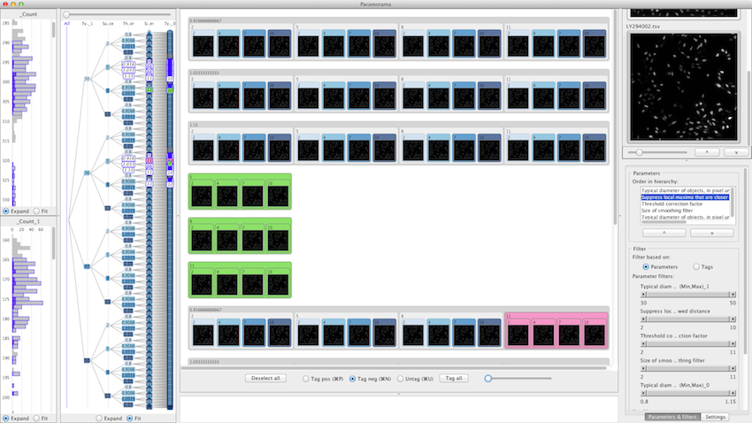
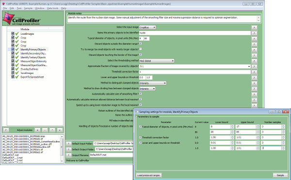
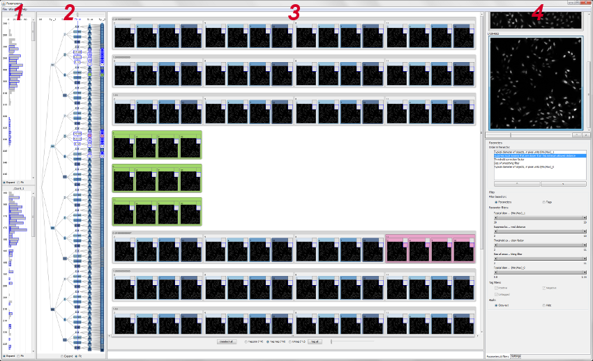

Paramorama
Parameter visualization for biomedical image analysis
[Download Paramorama (PC)] [Download Paramorama (Mac)] [Sample data] [About sample data]

Motivation
Image analysis algorithms are often highly parameterized and typically require significant human input to optimize input parameter settings. This can take up to several days. We propose a different approach based on parameter sampling and interactive visual exploration.
Sampling
We have developed a custom plug-in for CellProfiler � a popular image analysis framework developed and maintained by the Imaging Platform at the Broad Institute. After users have specified which parameters to sample and how, the plug-in automatically samples input parameters, computes and saves results to disk. Our plug-in ships with the developer's version of CellProfiler.

Visual analysis
Our main focus has been to develop a visualization technique for analyzing and exploring relationships between sampled input parameters and corresponding output images. Our prototype called Paramorama facilitates this.
[Download Paramorama] [Sample data] [About sample data]
Paramorama has four coordinated views:
- Metric view. Histograms of derived metrics, such as object count.
- Parameter space view. Structured outline of parameters and their sampled values.
- Preview area. Structured presentation of selected regions in parameter space as thumbnails.
- Reference image. Moving the mouse cursor over imaged-based output overlays it on a reference image. Multiple data sets and corresponding reference images can be loaded simultaneously.
Related publications
Visualization of parameter space for image analysis
A.J. Pretorius, M.-A.P. Bray, A.E. Carpenter and R.A. Ruddle
IEEE Transactions on Visualization and Computer Graphics, vol. 17, no. 12, pp. 2402-2411, 2011.
Visual analytics interface design for parameter optimization
A.J. Pretorius and R.A. Ruddle
Proceedings of the International UKVAC Workshop on Visual Analytics, 2011.
Contact
Paramorama is developed and maintained by Hannes Pretorius. Please feel free to contact him for any questions, suggestions or feedback.
Acknowledgements
Hannes Pretorius and Roy Ruddle are funded through WELMEC, a Centre of Excellence in Medical Engineering funded by the Wellcome Trust and EPSRC, under grant number WT088908/Z/09/Z. Mark Bray and Anne Carpenter are funded by the National Institutes of Health under grant number R01 GM089652.
Copyright 2011. A.J. Pretorius. All rights reserved.